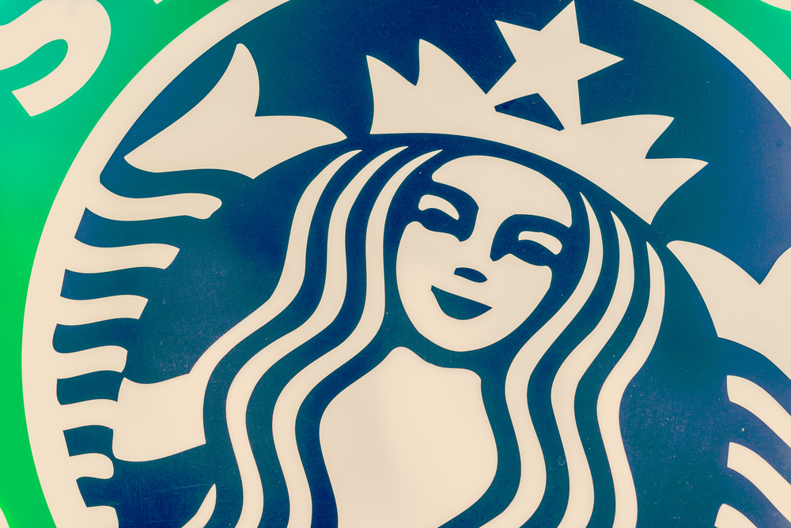

홈 > 브랜드 매거진 > 스타벅스
스타벅스
스타벅스는 커피를 팔면서 동시에 사람들이 머무는 시간과 공간의 감각을 설계한다. 음료는 핵심 상품이지만, 브랜드의 차별성은 매장 안에서 보내는 시간, 주문 언어, 조명, 좌석, 컵과 로고가 결합된 체류 경험에서 완성된다.
산업 분야 식음료 · 공개 등급 매거진 완성 · 브랜드 평가 5 ★


한눈에 보는 브랜드
스타벅스는 커피를 팔면서 동시에 사람들이 머무는 시간과 공간의 감각을 설계한다. 음료는 핵심 상품이지만, 브랜드의 차별성은 매장 안에서 보내는 시간, 주문 언어, 조명, 좌석, 컵과 로고가 결합된 체류 경험에서 완성된다.
브랜드 관점
스타벅스는 커피를 팔면서 동시에 사람들이 머무는 시간과 공간의 감각을 설계한다. 음료는 핵심 상품이지만, 브랜드의 차별성은 매장 안에서 보내는 시간, 주문 언어, 조명, 좌석, 컵과 로고가 결합된 체류 경험에서 완성된다.
스타벅스의 비즈니스는 커피 사업이면서 동시에 사람 중심의 관계 사업이다. 브랜드의 힘은 커피 맛만이 아니라 고객과 직원이 공유하는 태도, 반복 방문의 리듬, 일상 속 의식처럼 작동하는 매장 경험에서 나온다.
시작과 성장
스타벅스는 전 세계에서 가장 많은 커피 매장을 보유한 커피 브랜드 기업이다. 샌프란시스코 대학 동창인 제리 볼드윈, 고든 보커, 지브 시글이 1971년 미국 시애틀의 파이크 플레이스 마켓에 ‘스타벅스 커피, 티 앤 스파이스’를 열고 원두와 차, 향신료 등을 판매하면서 시작되었다.
브랜드 아이덴티티
스타벅스의 로고는 그리스 신화에 나오는 바다의 신 사이렌을 나타낸다. 바다를 항해하는 선원들이 사이렌 여신의 노래를 듣는 순간 바다에 빠진다는 일화에서 볼 수 있듯이, 스타벅스는 커피 하나로 전 세계인의 입맛을 사로잡았다.
“인간의 정신에 영감을 불어넣고 더욱 풍요롭게 한다. 이를 위해 한 분의 고객, 한 잔의 음료, 우리의 이웃에 정성을 다한다.”
제품과 서비스
커피, 프라푸치노, Starbucks Cappuccino, Starbucks caramel macchiato, 220ML STARBUCKS PET CAFE LATTE, Starbucks signature chocolat
현재 상태
타임라인
BI/CI 변천사
함께 읽을 브랜드
네슬레(Nestlé)는 스위스 브베에 본사를 둔 세계 최대 규모의 식음료 다국적 기업이다.
시스코 시스템즈(Cisco Systems)는 라우터·스위치 등 네트워킹 장비와 사이버보안·협업 솔루션을 개발하는 미국의 IT 기업이다.
 식음료 · 자료 기반메가MGC커피
식음료 · 자료 기반메가MGC커피메가MGC커피(Mega MGC Coffee)는 2015년 시작된 한국의 저가 대용량 커피 프랜차이즈다.
맥도날드는 가장 평범한 소비재를 세계 어디서나 읽히는 대중문화의 기호로 바꾼 브랜드다. 햄버거와 감자튀김은 단순한 메뉴지만, 맥도날드는 속도, 표준화, 접근성, 익숙...
 식음료 · 매거진 완성앱솔루트
식음료 · 매거진 완성앱솔루트앱솔루트는 보드카 병 하나를 광고와 예술의 반복 가능한 캔버스로 만든 브랜드다. 제품 형태의 일관성을 유지하면서도 캠페인마다 다른 문화적 해석을 입혀, 단순한 병을...
 식음료 · 매거진 완성코카-콜라
식음료 · 매거진 완성코카-콜라코카-콜라는 음료의 맛보다 함께 마시는 순간의 감정을 브랜드 자산으로 축적해 왔다. 병의 형태, 색, 광고 언어, 공유의 장면이 반복되면서 제품은 탄산음료를 넘어 친...
버거킹는 미국의 식음료 브랜드로, 맛, 메뉴 구성, 패키지, 매장 또는 유통 채널이 함께 브랜드 경험을 만드는 영역입니다.
KFC(Kentucky Fried Chicken)는 할랜드 샌더스 대령이 창립한 미국 기반의 글로벌 프라이드 치킨 프랜차이즈이다.